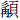

殷商成湯
名履。湯有七名而九征。放桀於南巢而還，諸侯八譯而來者千八百國，奇肱氏以車至，乃同尊天乙履為天子，三讓，遂即天子之位。初，高辛氏之世妃曰簡狄，以春分玄鳥至之日，從帝祀郊禖，與其妹浴於玄丘之水。有玄鳥銜卵而墜之，五色甚好，二人競取，覆以玉筐。簡狄先得而吞之，遂孕。胸剖而生契。長為堯司徒，成功於民，受封於商。後十三世，生主癸。主癸之妃曰扶都，見白氣貫月，意感，以乙日生湯，號天乙。豐下銳上，晳而有

，句身而揚聲，長九尺，臂有四肘，是為成湯。湯在亳，能修其德。伊摯將應湯命，夢乘船過日月之旁。湯乃東至於洛，觀帝堯之壇，沈璧退立，黃魚雙踴，黑鳥隨之止於壇，化為黑玉。又有黑龜，竝赤文成字，言夏桀無道，湯當代之。檮杌之神，見於邳山。有神牽白狼銜鈎而入商朝。金德將盛，銀自山溢。湯將奉天命放桀，夢及天而舐之，遂有天下。商人後改天下之號曰殷。十八年癸亥，王即位，居亳。始屋夏社。
十九年，大旱。氐、羌來賓。
二十年，大旱。夏桀卒于亭山。禁弦歌舞。
二十一年，大旱。鑄金幣。
二十二年，大旱。二十三年，大旱。
二十四年，大旱，王禱于桑林，雨。
二十五年，作大濩樂。初巡狩，定獻令。
二十七年，遷九鼎于商邑。
二十九年，陟。
外丙
名勝。
元年乙亥，王即位，居亳，命卿士伊尹。
二年，陟。
仲壬
名庸。
元年丁丑，王即位，居亳，命卿士伊尹。
四年，陟。
太甲
名至。
元年辛巳，王即位，居亳，命卿士伊尹。伊尹放太甲于桐，乃自立。
約按：伊尹自立，蓋誤以攝政為真爾。
七年，王潛出自桐，殺伊尹，天大霧三日，乃立其子伊陟、伊奮，命復其父之田宅，而中分之。
約按：此文與前後不類，蓋後世所益
十年，大饗于太廟。初祀方明。
十二年，陟。
沃丁
名絢。
元年癸巳，王即位，居亳。命卿士咎單。
八年，祠保衡。
十九年，陟。
小庚
名辨。
元年壬子，王即位，居亳。
五年，陟。
小甲
名高。
元年丁巳，王即位，居亳。
十七年，陟。
雍己
名佃。
元年甲戌，王即位，居亳。
十二年，陟。
太戊
名密。
元年丙戌，王即位，居亳。命卿士伊陟、臣扈。
七年，有桑穀生于朝。
十一年，命巫咸禱于山川。
二十六年，西戎來賓，王使王孟聘西戎。
三十一年，命費侯中衍為車正。
三十五年，作寅車。
四十六年，大有年。
五十八年，城蒲姑。
六十一年，東九夷來賓。
七十五年，陟。
太戊遇祥桑，側身修行。三年之後，遠方慕明德，重譯而至者七十六國。商道復興，廟為太宗。
仲丁
名莊。
元年辛丑，王即位，自亳遷于囂，于河上。
六年，征藍夷。
九年，陟。
外壬
名發。
元年庚戌，王即位，居囂。邳人、姺人叛。
十年，陟。
河亶甲
名整。
元年庚申，王即位，自囂遷于相。
三年，彭伯克邳。
四年，征藍夷。
五年，姺人入于班方。彭伯、韋伯伐班方，姺人來賓。
九年，陟。
祖乙
名滕。
元年己巳，王即位，自相遷于耿，命彭伯、韋伯。
二年，圮于耿，自耿遷于庇。
三年，命卿士巫賢。
八年，城庇。
十五年，命邠侯高圉。
十九年，陟。
祖乙之世，商道復興，廟為中宗
祖辛
名旦。
元年戊子，王即位，居庇。
十四年，陟。
開甲
名踰。
元年壬寅，王即位，居庇。
五年，陟。
祖丁
名新。
元年丁未，王即位，居庇。
九年，陟。
南庚
名更。
元年丙辰，王即位，居庇。
三年，遷于奄。
六年，陟。
陽甲
名和。
元年壬戌，王即位，居奄。
三年，西征丹山戎。
四年，陟。
盤庚
名旬。
元年丙寅，王即位，居奄。
七年，應侯來朝。
十四年，自奄遷于北蒙，曰殷。
十五年，營殷邑。
十九年，命邠侯亞圉。
二十八年，陟。
小辛
名頌。
元年甲午，王即位，居殷。
三年，陟。
小乙
名歛。
元年丁酉，王即位，居殷。
六年，命世子武丁居于河，學于甘盤。
十年，陟。
武丁
名昭。
元年丁未，王即位，居殷，命卿士甘盤。
三年，夢求傅說，得之。
六年，命卿士傅說，視學養老。
十二年，報祀上甲微。
二十五年，王子孝已卒于野。
二十九年，肜祭太廟，有雉來。
三十二年，伐鬼方，次于荆。
三十四年，王師克鬼方，氐、羌來賓。
四十三年，王師滅大彭。
五十年，征豕韋，克之。
五十九年，陟。
王，殷之大仁也。力行王道，不敢荒寧，嘉靖殷邦，至于大小，無時或怨。是時輿地東不過江黃，西不過氐羌，南不過荆蠻，北不過朔方，而頌聲作。禮廢而復起，廟號高宗。
祖庚
名曜。
元年丙午，王即位，居殷，作高宗之訓。
十一年，陟。
祖甲
名載。
元年丁巳，王即位，居殷。
十二年，征西戎。冬，王返自西戎。
十三年，西戎來賓。命邠侯組紺。
二十四年，重作湯刑。
二十七年，命王子囂、王子良。
三十三年，陟。
王舊在野，及即位，知小人之依，能保惠庶民，不侮鰥寡。怠其末也，繁刑以攜遠，殷道復衰。
馮辛
名先。
元年庚寅，王即位，居殷。
四年，陟。
庚丁
名囂。
元年甲午，王即位，居殷。
八年，陟。
武乙
名瞿。
元年壬寅，王即位，居殷。邠遷于岐周。
三年，自殷遷于河北。命周公亶父，賜以岐邑。
十五年，自河北遷于沬。
二十一年，周公亶父薨。
二十四年，周師伐程，戰于畢，克之。
三十年，周師伐義渠，乃獲其君以歸。
三十四年，周公季歷來朝，王賜地三十里，玉十瑴，馬十匹。
三十五年，周公季歷伐西落鬼戎。王畋于河、渭，大雷震死。
文丁
名托。
元年丁丑，王即位，居殷。
二年，周公季歷伐燕京之戎，敗績。
三年，洹水一日三絕。
四年，周公季歷伐余無之戎，克之，命為牧師。
五年，周作程邑。
七年，周公季歷伐始呼之戎，克之。
十一年，周公季歷伐翳徒之戎，獲其三大夫，來獻捷，王殺季歷。
王嘉季歷之功，錫之圭瓚、秬鬯，九命為伯，既而執諸塞庫。季歷困而死，因謂文丁殺季歷。
十二年，有鳳集于岐山。
十三年，陟。
帝乙
名羨。
元年庚寅，王即位，居殷。
三年，王命南仲，西拒昆夷，城朔方。夏六月，周地震。
九年，陟。
帝辛
名受。
元年己亥，王即位，居殷。命九侯、周侯、邘侯。
三年，有雀生鸇。
四年，大蒐于黎。作炮烙之刑。
五年夏，築南單之臺。雨土于毫。
六年，西伯初禴于畢。
九年，王師伐有蘇，獲妲己以歸。作瓊室，立玉門。
十年夏六月，王畋于西郊。
十七年，西伯伐翟。冬，王游于淇。
二十一年春正月，諸侯朝周。伯夷、叔齊自孤竹歸于周。
二十二年冬，大蒐于渭。
二十三年，囚西伯于羑里。
二十九年，釋西伯。諸侯逆西伯，歸于程。
三十年春三月，西伯率諸侯入貢。
三十一年，西伯治兵于畢，得呂尚以為師。
三十二年，五星聚于房。有赤烏集于周社。密人侵阮，西伯帥師伐密。
三十三年，密人降于周師，遂遷于程。王錫命西伯，得專征伐。
約按：文王受命九年，大統未集，蓋得專征伐，受命自此年始。
三十四年，周師取耆及邘，遂伐崇，崇人降。冬十二月，昆夷侵周。
三十五年，周大饑。西伯自程遷于豐。
三十六年春正月，諸侯朝于周，遂伐昆夷。西伯使世子發營鎬。
三十七年，周作辟雍。
三十九年，大夫辛甲出奔周。
四十年，周作靈臺。王使膠鬲求玉于周。
四十一年春三月，西伯昌薨。
四十二年，周武王元年。西伯發受丹書于呂尚。有女子化為丈夫。
四十三年春，大閱。嶢山崩。
四十四年，西伯發伐黎。
四十七年，內史向摯出奔周。
四十八年，夷羊見。二日竝出。
五十一年冬十一月戊子，周師渡盟津而還。王囚箕子，殺王子比干，微子出奔。
五十二年庚寅，周始伐殷。秋，周師次于鮮原。冬十有二月，周師有事于上帝。庸、蜀、羌、髳、微、盧、彭、濮從周師伐殷。
湯滅夏以至于受，二十九王，用歲四百九十六年。
本章完!